pricepick-demo.vercel.app /app(게스트) · /cms 배포본에서 직접 캡처 (2026.07.09) · 목업/와이어프레임 없음 · 정책 기준 = 마스터 정책서(policyspec, SoT)
이 문서의 모든 화면 썸네일은 배포본에서 게스트 계정 생성 → CMS 수동 티켓 지급 → 실제 교환 2건(브론즈·실버) 실행 → CMS 집계 확인까지 실제로 수행한 뒤 캡처한 스크린샷입니다. 그림으로 대체한 화면은 없습니다.
단일 등급 결제
한 상품 = 한 등급 티켓으로만 (혼합 결제 없음)
100 / 1,000 / 2,000원
티켓 1장 가치 (브론즈 / 실버 / 골드)
취소 불가
교환 완료 후 취소·재발급 없음
이벤트 티켓 제외
경품 응모 전용 — 기프티콘 교환 불가
1
유저
진입점 — 홈 티켓 카드 배너 & 혜택 탭 CTA
교환소 진입 경로는 두 곳. 홈 '내 보유 티켓' 카드 하단의 "기프티콘 교환 — 티켓으로 커피·상품권 교환" 배너, 그리고 혜택 탭 하단 고정 "기프티콘 교환" 버튼. 두 경로 모두 같은 티켓 교환소로 이동한다.
홈 · 티켓 카드 안 "기프티콘 교환" 배너 (가입 직후 0장 상태)
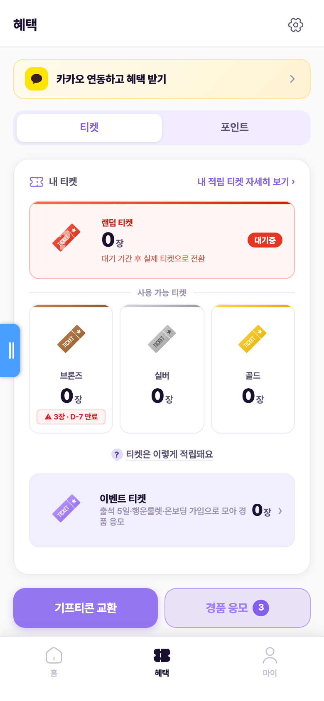
혜택 탭 · 하단 고정 "기프티콘 교환" CTA
2
유저
티켓 교환소 — 카탈로그
상단에 내 보유 티켓 요약(브론즈/실버/골드)이 고정되고, 그 아래 검색·정렬·"교환 내역" 버튼, 카테고리 필터, "지금 교환 가능한 상품만" 토글, 상품 그리드가 이어진다. 상품 카드는 브랜드 + 상품명 + 필요 티켓(등급 × 장수)을 표시하며, 카탈로그는 CMS "상품 목록"에 등록된 판매중 상품(gifticons 컬렉션)을 실시간 로드한다.
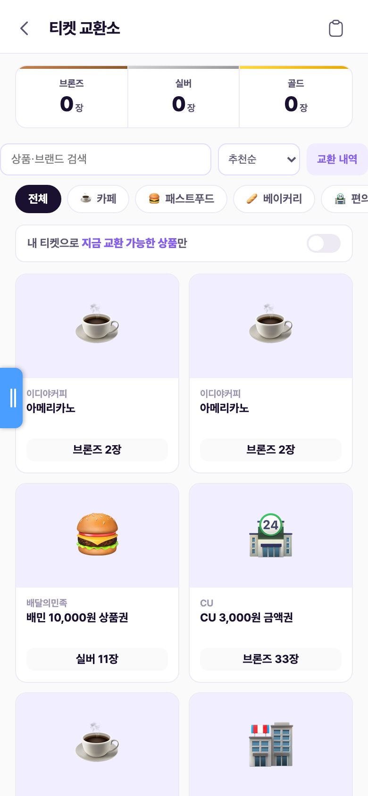
교환소 카탈로그 · 티켓 0장 상태 (전 상품 교환 불가 — '구매가능' 배지 없음)
데모 한계: 검색·정렬·카테고리 필터·"교환 가능만" 토글은 현재 데모에서 UI만 존재하고 동작하지 않는다 (실서비스 구현 항목).
3
분기
티켓 부족 vs 보유 충분
필요 등급의 보유 수량에 따라 카드 배지와 교환 가능 여부가 갈린다. 부족해도 상세 진입은 가능하지만 최종 실행이 차단된다.
티켓 부족 · 교환 차단
보유 < 필요 수량
카드에 '구매가능' 배지가 붙지 않는다. 상세에서 "교환하기"를 눌러도 "티켓이 부족합니다" 토스트와 함께 처리되지 않는다.
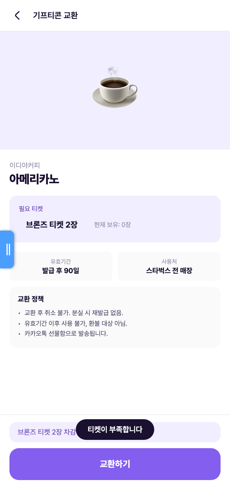
보유 0장 · "티켓이 부족합니다" 토스트 차단
보유 충분 · 교환 가능
보유 ≥ 필요 수량
해당 상품 카드 좌상단에 '구매가능' 배지가 표시된다. 보유 요약(브 40 / 실 12 / 골 2) 기준으로 상품별로 개별 판정된다.
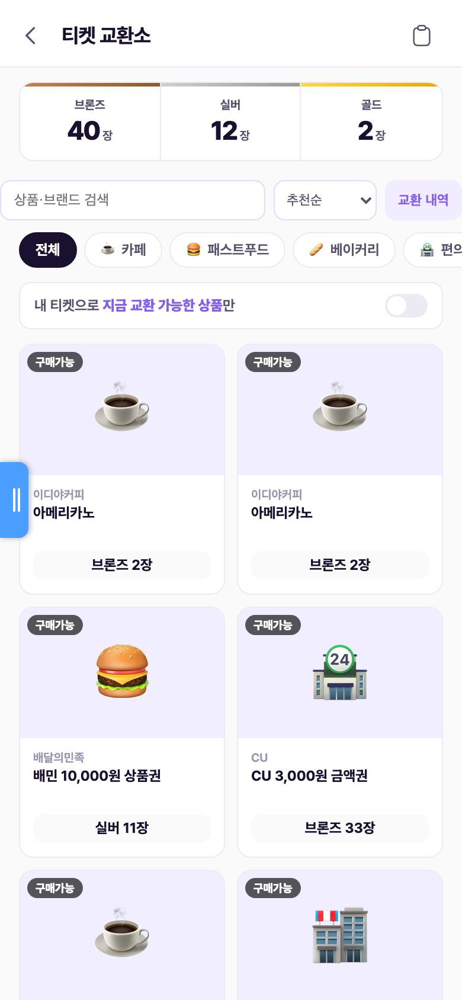
티켓 보유 후 · 전 상품 '구매가능' 배지
4
운영자
CMS 수동 티켓 지급 (이 시연의 티켓 확보 경로)
실서비스에서 티켓은 경유 구매 적립으로 쌓이지만, 이 시연에서는 CMS "티켓 내역 > 수동 지급/회수"로 검증 계정에 브론즈 40 · 실버 12 · 골드 2장을 지급했다. 대상 회원 선택 + 등급별 수량 스테퍼 + 사유 필수 입력이며, 처리 내역은 관리자 로그와 티켓 원장(user_tickets·ticket_transactions)에 기록된다. 지급 즉시 앱 홈 보유 티켓에 반영된다(54장).
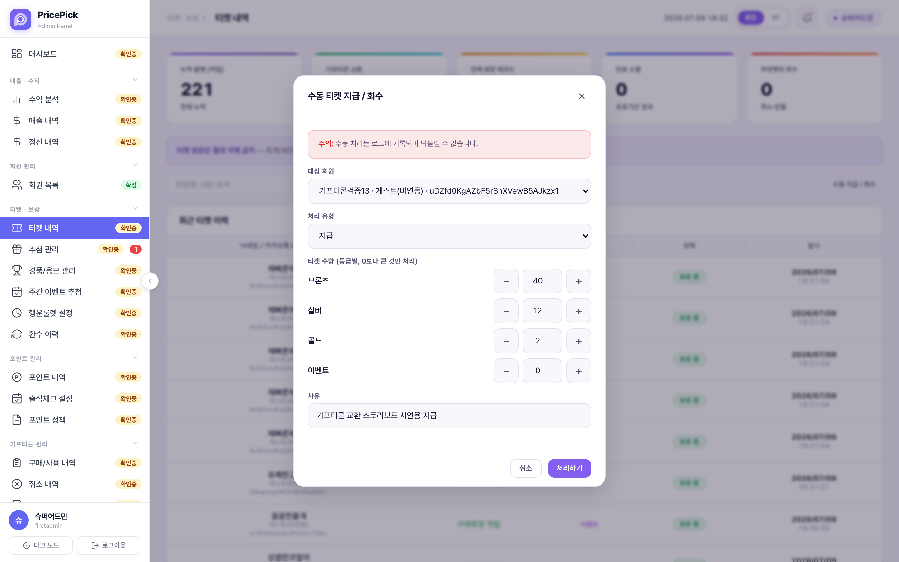
CMS > 티켓 내역 > 수동 지급/회수 — 대상 회원·등급별 수량·사유 입력
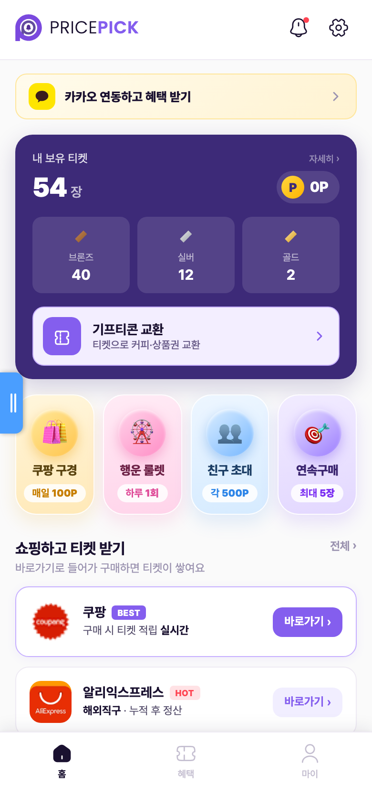
지급 직후 앱 홈 · 브 40 / 실 12 / 골 2 = 54장 반영
5
유저
기프티콘 상세 — 차감 미리보기 → 교환 실행
상세 화면은 상품 카드(이미지·브랜드·상품명), 필요 티켓 vs 현재 보유 비교, 유효기간, 교환 정책 3줄(취소 불가 / 기간 경과 시 사용 불가 / 발송 안내)을 표시한다. 하단에 차감 미리보기("브론즈 티켓 2장 차감 → 잔여 38장")와 "교환하기" CTA. 실행 시 만료 임박 티켓부터(FIFO) 소진 처리되고, 티켓 원장에 사용 기록 + 교환 이력(gifticon_exchanges)이 남는다.
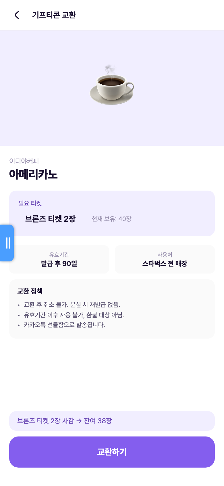
상세 · 필요 2장 / 보유 40장 · 차감 미리보기 "2장 차감 → 잔여 38장"
현재 데모는 "교환하기" 원탭으로 즉시 처리된다. 화면 스펙의 확인 모달 단계는 미구현 — 하단 미결 P5 참조.
6
발급
교환 완료 — 교환 코드 즉시 발급
처리 완료 시 교환 완료 화면으로 전환되고 상품 카드 안에 교환 코드(PP-XXXX-XXXX-XXXX 형식) + 바코드가 발급된다. "발급일로부터 90일 유효" 안내가 붙는다. "확인"은 혜택 탭으로, "홈으로 가기"는 홈으로 이동. 코드는 교환 내역에서 언제든 다시 볼 수 있다.
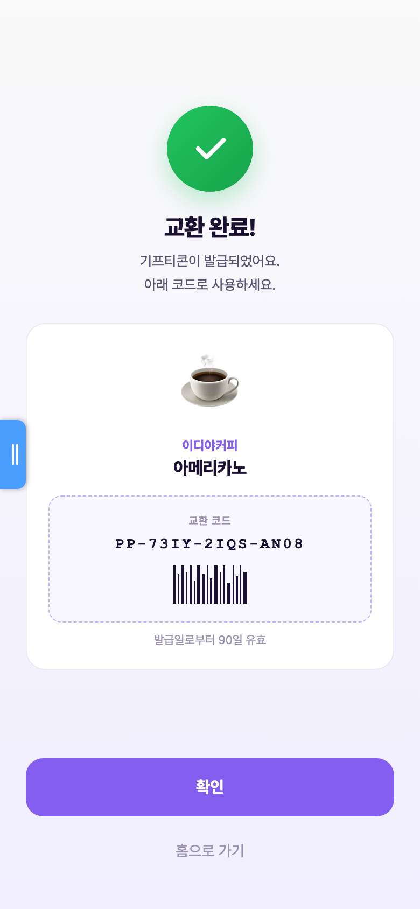
교환 완료 · 실제 발급 코드 PP-73IY-2IQS-AN08 + 바코드
7
유저
사후 반영 — 잔여 차감 · 교환 내역 · 활동 내역
교환 2건(이디야 아메리카노 브론즈 2장, 배민 상품권 실버 11장) 후 보유 티켓이 브 38 / 실 1 / 골 2로 차감 반영된다. 교환소의 "교환 내역" 패널에서 건별 상태(발급완료)와 사용 티켓·교환일을 확인하고 '코드 보기'로 완료 화면을 재호출한다. 마이 > 활동 내역에는 티켓 원장 기준으로 사용 기록이 장 단위(-1장)로 남는다.
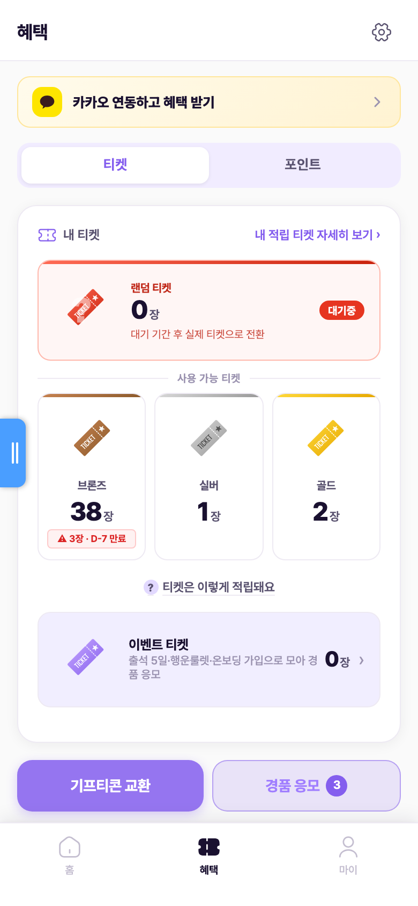
교환 후 혜택 탭 · 브 38 / 실 1 / 골 2
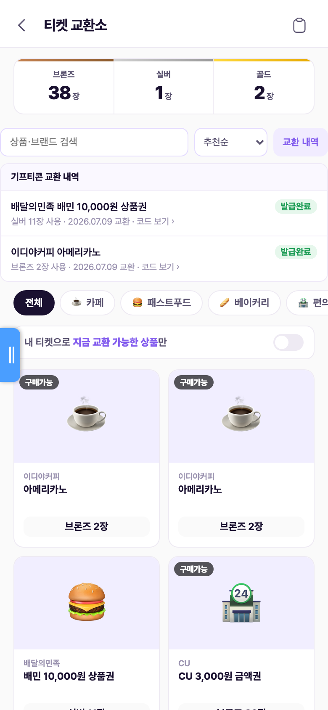
교환소 "교환 내역" · 발급완료 2건 + 코드 보기
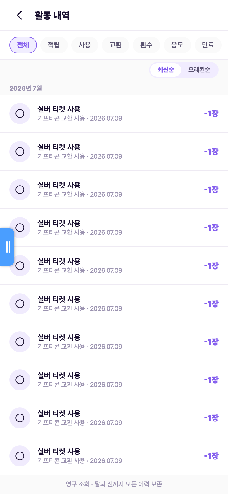
마이 > 활동 내역 · "기프티콘 교환 사용 -1장" 기록
8
운영자 · CMS
CMS 기프티콘 관리 — 내역 · 라인업 · 집계
CMS "기프티콘 관리" 그룹은 4개 메뉴. 구매/사용 내역에 앱 교환 건이 자동 기록되고(회원·상품·소모 티켓), 상품 목록에서 라인업(카테고리·브랜드·상품명·유효기간·교환 티켓·판매 상태)을 관리하며 "+상품 추가"로 등록한다. 취소 내역은 관리자·시스템 취소 건 기록용(유저 취소는 정책상 불가). 대시보드에는 기프티콘 판매 수익(교환 마진) KPI가 집계되고, 회원 상세에서 교환 후 티켓 보유 현황을 실시간 확인한다.
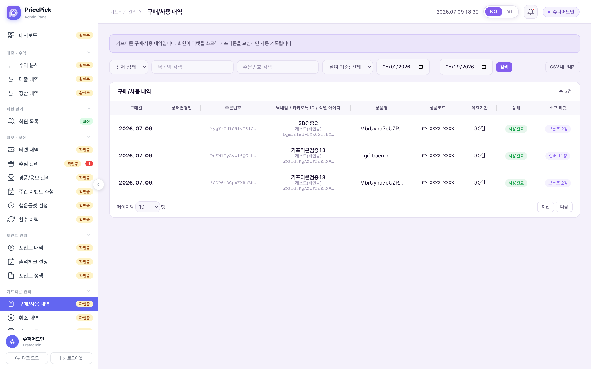
CMS > 구매/사용 내역 — 이번 시연 교환 건 자동 기록 (실버 11장 · 브론즈 2장)
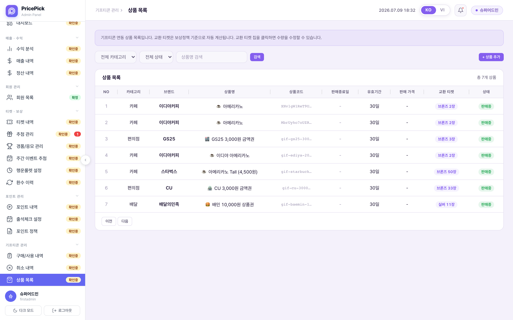
CMS > 상품 목록 — 라인업 7개 · 교환 티켓 칩 · 판매중 상태
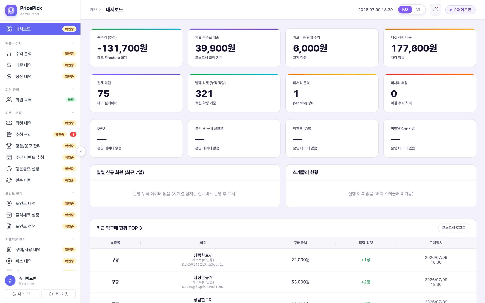
CMS > 대시보드 — "기프티콘 판매 수익(교환 마진)" KPI, 교환 반영 후 6,000원
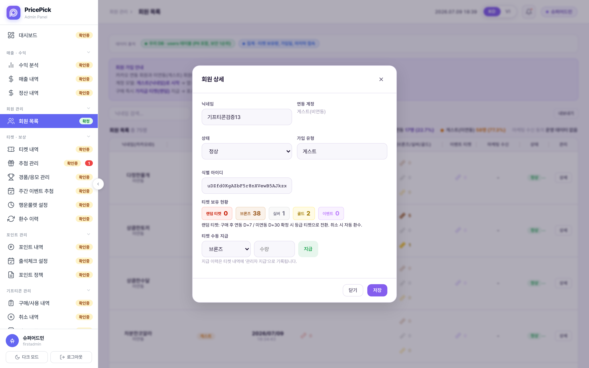
CMS > 회원 상세 — 교환 후 보유 (브 38 / 실 1 / 골 2) 실시간 반영 + 개별 수동 지급
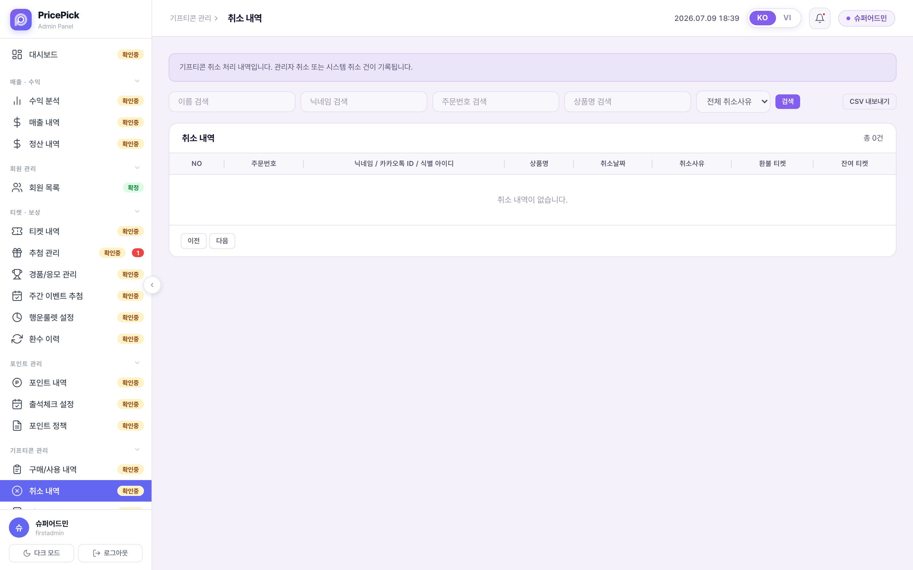
CMS > 취소 내역 — 관리자·시스템 취소 기록용 (현재 0건)
정책 · 규칙 (SoT: 마스터 정책서 policyspec)
단일 등급 교환한 상품은 한 가지 등급 티켓으로만 교환(브론즈끼리·실버끼리·골드끼리). 여러 등급을 섞는 혼합 결제 없음.— 정책서 6. 교환·등급
티켓 가치 · 라인업티켓 1장 가치 = 브론즈 100원 · 실버 1,000원 · 골드 2,000원. 라인업은 티켓 단위에 딱 떨어지는 액면가 상품만 등록 가능 — 액면가가 교환 가치와 안 맞으면 등록 자체 불가(적자 교환 방지). — 정책서 6
이벤트 티켓 제외이벤트 티켓은 경품 응모 전용. 기프티콘 교환에는 쓸 수 없다. — 정책서 3. 유효기간·만료
취소 불가교환 완료 후 취소 불가(유저). CMS "취소 내역"은 관리자·시스템 취소 건 기록용. — 정책서 6
본인인증 게이트가입·적립 단계에는 인증 없음. 기프티콘으로 처음 교환(환금)하려는 순간 1회 휴대폰 본인인증, 이후 인증 상태 유지. 1개 번호 = 1개 계정만 환금 가능 — 계정농장 차단의 핵심 게이트. — 정책서 11. 본인인증·정산
부족 등급 보완낮은 등급을 모아 높은 등급으로 등가 상향(브론즈 10장 → 실버 1장, 실버 2장 → 골드 1장, 하향 불가) — 별도 기능 ⑦ 티켓 등급 교환에서 처리. — 정책서 6
탈퇴 시 처리탈퇴하면 보유 티켓·미사용 기프티콘 즉시 소멸, 복구 불가(약관). — 정책서 7
수익 모델순수익 = 제휴 수수료 + 기프티콘 판매 마진(티켓 → 기프티콘 교환 시 발생) − 적립 비용. CMS 대시보드 "기프티콘 판매 수익" KPI가 이 항목. — 정책서 12. 수익
운영값 연동 수정등급 가치·적립 단위·보상률·교환비·기프티콘 라인업은 한 세트로만 수정(단독 변경 금지). — 정책서 운영값 원칙
미결 · 정책 불일치 (형님 확정 필요)
P1기프티콘 유효기간 충돌 — 마스터 정책서(SoT)에 기프티콘 자체 유효기간 규정 없음. CMS 약관은 "발급 30일 이내 사용", CMS 상품 데이터도 전 상품 30일로 등록돼 있는데, 앱 상세·완료 화면 문구와 실제 발급 만료는 90일 고정(상품별 유효기간 값을 앱이 반영하지 않음).→ 기준 유효기간(30일 vs 90일 vs 상품별)을 SoT에 명문화하고 앱·CMS·약관 3곳 일치 필요.
P4발송 방식 미확정 — 앱 상세 문구는 "카카오톡 선물함으로 발송됩니다"인데 실동작은 앱 내 교환 코드·바코드 즉시 발급. 실서비스의 발행 방식(자체 코드 vs 기프티콘 벤더사 연동 발송)은 미확정 — 카카오 선물함 발송은 외부 벤더 연동이 필요한 미확인 항목(개인정보처리방침에 '발송 벤더사' 언급만 존재).→ 벤더 연동 여부 결정 후 상세 문구·완료 화면 통일.
구현·정리 필요 (정책은 SoT로 확정 — 형님 결정 불필요)
P2환금 게이트 미구현 — 정책(SoT)상 첫 교환 시 휴대폰 본인인증 1회 + "카카오 연동 후에만 사용 가능"으로 이미 확정. 현재 데모는 게스트(미연동)도 인증 없이 즉시 교환된다(이번 시연 자체가 게스트 교환). 데모 편의로는 무방하나 실서비스 필수 구현 항목.→ 개발 이관 시 '연동 체크 + 첫 환금 본인인증' 게이트를 교환하기 직전 단계로 명시.
P3라인업 액면가 규칙 위반 시드 — 정책(SoT)은 "액면가가 티켓 단위와 안 맞으면 등록 불가"로 확정돼 있는데 현재 등록 상품이 규칙과 어긋남: 배민 10,000원권 = 실버 11장(11,000원), CU 3,000원권 = 브론즈 33장(3,300원), 스타벅스 4,500원 = 브론즈 50장(5,000원), GS25 3,000원권 = 브론즈 3장(300원). 이디야 아메리카노는 중복 2건. CMS 등록 폼에 액면가 검증이 없다.→ 시드 정리 + CMS 상품 등록 시 액면가=교환가치 검증 로직 필요.
P5교환 확인 모달 부재 — 화면 스펙(25 기프티콘 교환 상세)은 "교환하기 → 확인 모달 → 완료"인데 데모는 원탭 즉시 교환. 취소 불가 정책과 결합하면 오탭 리스크가 크다.→ 확인 모달(또는 길게 누르기 등 2단계 확인) 추가 권고.
참고데모 구현 한계 (정책 미결 아님 — 개발 이관 시 정리 목록): ① 상세의 사용처·유효기간 문구가 정적이라 어떤 상품이든 "스타벅스 전 매장 / 발급 후 90일"로 표시 ② 카탈로그 검색·정렬·카테고리·"교환 가능만" 토글 미동작 ③ CMS 구매/사용 내역의 교환 코드가 마스킹 고정(PP-XXXX-XXXX)·유효기간 90일 고정·상태 '사용완료' 고정(실제 저장 상태는 발급완료)이고 일부 행 상품명에 상품코드가 노출 ④ 대시보드 판매 수익이 등급 무관 장당 2,000원 × 마진 20% 일괄 가정으로 계산.